Лекция 7. Организация ввода-вывода
- Общие положения
- Общие принципы организации ВВ
- Программный ВВ
- ВВ по прерываниям
- ВВ в режиме ПДП
- Адаптер последовательного интерфейса
- Адаптер параллельного интерфейса
ОБЩИЕ ПОЛОЖЕНИЯ
Вводом/выводом (ВВ) называют передачу данных между ядром ЭВМ, включающим в себя процессор и ОП, и периферийными устройствами (ПУ).
Система ВВ – это единственное средство общения ЭВМ с внешним миром. Ее возможности в серийных ЭВМ представляют собой один из важнейших параметров, определяющих выбор машины для конкретного применения.
Несмотря на разнообразие ПУ, в настоящее время разработано несколько стандартных способов их подключения к ЭВМ и программирования ВВ. Существует три режима ВВ:
- Программный ВВ (нефорсированный).
- ВВ по прерыванию (форсированный).
- Прямой доступ к памяти (ПДП).
Реализация ВВ в каждом из этих режимов отличается программно-аппаратными затратами и, самое важное, скоростью выполнения операций обмена и непроизводительными затратами времени процессора. Суть каждого из трех режимов состоит в следующем.
Программный ВВ. Инициирование и управление ВВ осуществляет процессор по командам прикладной программы. ПУ играют пассивную роль и только сигнализируют о своем состоянии, в частности о готовности к операциям ВВ.
ВВ по прерыванию. Операции ВВ инициирует ПУ, генерируя сигнал запроса прерывания, при этом процессор переключается на подпрограмму обслуживания данного ПУ, вызвавшего прерывание. В результате выполнения подпрограммы (обработчика) осуществляется обмен данными. Действия, выполняемые обработчиком, определяются пользователем, а непосредственно операциями ВВ управляет процессор.
Таким образом, как при программном ВВ, так и при ВВ по прерываниям операциями обмена управляет процессор, поэтому очень часто эти два варианта обмена не разделяют и рассматривают их как программный ВВ. В англоязычной литературе – Programmed Input/Output (PIO). Однако в настоящем курсе эти варианты обмена рассматриваются отдельно.
Прямой доступ к памяти. Процессор в передаче данных не участвует. Он отключается от системной магистрали, а все операции обмена данными идут под управлением специального управляющего устройства – контроллера ПДП. Этот режим используется для быстродействующих ПУ, когда пропускной способности процессора недостаточно.
ОБЩИЕ ПРИНЦИПЫ ОРГАНИЗАЦИИ ВВ
В каждой ЭВМ применяются особые способы ВВ, различные конфигурации схем и типы устройств. Однако для большинства ЭВМ можно выделить следующие общие принципы:
- Передача данных осуществляется по общей системной магистрали (что характерно для микроЭВМ) либо по специальной магистрали ВВ (что характерно для мини- и больших ЭВМ). Иногда отдельная быстродействующая магистраль ВВ выделяется только для обмена в режиме ПДП.
- Подключение ПУ к системному интерфейсу осуществляется с помощью промежуточного интерфейса, поддерживаемого со стороны микроЭВМ и ПУ соответствующими адаптерами.
- Операции ВВ инициируются только в случае готовности ПУ к обмену. При наличии нескольких ПУ и обмене в режиме прерывания или ПДП вводится система приоритетов, позволяющая избежать конфликтов. В соответствии с этой системой контроллер прерываний или ПДП среди ПУ, готовых к обмену, в первую очередь обслуживает ПУ с высшим приоритетом .
Передача данных осуществляется двумя способами:
- отдельными битами, и тогда промежуточный интерфейс называется последовательным;
- полными словами (например, целым байтом), и тогда промежуточный интерфейс называется параллельным
Информация, передаваемая в процессе ВВ, подразделяется:
- на собственно данные (обозначим D);
- управляющие данные (обозначим U).
Управляющие данные от процессора называются также командными словами или приказами. Они инициируют действия, не связанные непосредственно с передачей данных (запуск устройства, запрещение прерываний, установка режимов и т.д.).
Управляющие данные от ПУ называются словами состояния. Они содержат информацию об определенных признаках (о готовности устройства к передаче данных, о наличии ошибок при обмене и т.д.). Состояние обычно представляется в декодированной форме – один бит для каждого признака.
С учетом всего изложенного можно изобразить наиболее общую программную модель адаптера промежуточного интерфейса (ППУ), связывающего системную магистраль микроЭВМ и внутреннюю магистраль ПУ. Такая обобщенная программная модель ППУ представлена на рис. 7.1. Каждый из указанных регистров должен иметь адрес, который может идентифицироваться дешифратором адреса.
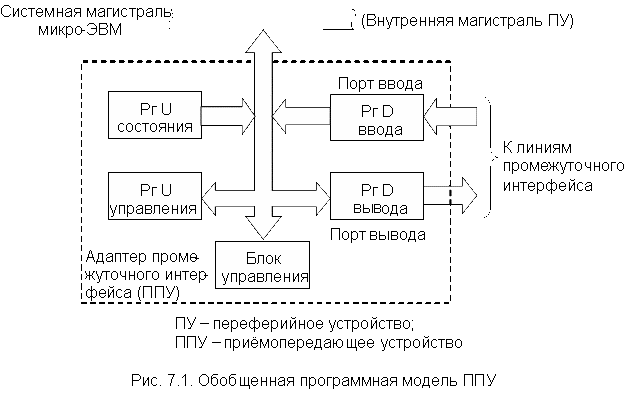
Естественно, что конкретная модель адаптера может отличаться от обобщенной схемы, например, регистр состояния и управления могут быть объединены в один регистр, вместо двух однонаправленных портов используют один двунаправленный, регистров управления может быть несколько. Однако при этом логические функции указанных четырех регистров остаются.
В соответствии с рассмотренными ранее различными структурами системной магистрали возможны два способа организации операций ВВ.
Изолированный ВВ (соответствует структуре с изолированными шинами)
Изолированный ВВ предполагает наличие специальных команд ВВ. В МП КР580 это команды IN и OUT. Адресное пространство регистров ППУ изолировано от адресного пространства ячеек памяти, т.е. регистры ППУ и ячейки памяти могут иметь одинаковый адрес. Команды IN и OUT – двухбайтовые. Первый байт – КОП, а второй несет информацию о номере адресуемого ППУ и номере адресуемого в нем регистра. При этом в МП КР580 предусмотрена возможность обмена данными по командам IN, OUT только между аккумулятором и адресуемыми регистрами.
ВВ по общей шине (соответствует структуре с общими шинами)
В этом случае адресация к регистрам ППУ осуществляется как к обычным ячейкам памяти, т.е. ячейки памяти и регистры ППУ имеют единое адресное пространство. Можно использовать все команды обращения к ячейкам памяти. Это удобно, однако часть адресного пространства памяти используется для адресации регистров ППУ, что может вызвать трудности, если программа большая и много ПУ.
ПУ и микроЭВМ могут обмениваться достаточно большими объемами информации, которые невозможно поместить только в регистрах процессора. Ввиду этого часто операции ВВ являются операциями обмена данными между ОП и ПУ. Как уже отмечалось, для повышения гибкости всей вычислительной системы в микроЭВМ предусмотрено три режима выполнения операций ВВ. Рассмотрим эти режимы подробнее.
ПРОГРАММНЫЙ ВВ
В этом режиме все действия, связанные с операциями ВВ, реализуются командами прикладной программы, причем возможны два вида обмена – синхронный и асинхронный, которые целесообразно использовать в различных ситуациях.
Синхронный ВВ
Такой ВВ можно использовать для связи с ПУ, которые "всегда готовы", например светодиодные индикаторы, либо для ПУ, в которых известно точно время выполнения операций, например, максимальное время, необходимое для печати одного знака.
В первом случае команды ВВ ставятся в произвольных точках программы. Во втором случае программа должна быть составлена так, чтобы команды на обмен шли с интервалами не меньшими, чем время выполнения одной операции обмена (т.е. максимальное время выполнения операции в ПУ).
Это наиболее простой вид обмена, требующий минимум программно-аппаратных затрат (он называется еще безусловным ВВ). Однако при работе с медленными ПУ, как правило, не удается оптимальным образом загрузить процессор на период времени между пересылками данных.
Асинхронный ВВ
В этом случае интервал между операциями обмена задается самим ПУ. Информацию о готовности ПУ к операциям обмена процессор получает периодически, анализируя содержимое регистра состояния ППУ, поэтому процесс обмена состоит из двух фаз:
- проверки готовности ПУ к обмену;
- реализации непосредственно операций ВВ.
Первая фаза обмена в большинстве случаев реализуется путем циклического вызова содержимого регистра состояния ППУ в аккумулятор, сравнения его с некоторой маской и анализа полученного результата, т.е. происходит реализация цикла ожидания готовности ПУ. На реализацию цикла ожидания затрачивается время, иногда весьма значительное. Это является существенным недостатком такого вида обмена, поскольку в период ожидания процессор не может выполнять полезной работы, т.е. фактически простаивает.
ВВ ПО ПРЕРЫВАНИЯМ
Для сокращения непроизводительных потерь времени процессора за счет циклов ожидания при программном обмене, т.е. когда процессор не может заниматься ничем, кроме программы ВВ, используют обмен по прерыванию.
При готовности к обмену ПУ посылает в процессор запрос на обслуживание – сигнал INT (запрос прерывания). Этот сигнал появляется в произвольные моменты времени, а, следовательно, и в произвольной точке текущей программы. Поскольку заранее неизвестно, в какой точке программы и какие ПУ инициируют прерывания, непосредственно в программе команды ВВ использовать нельзя.
Некоторые вопросы, связанные с обслуживанием прерываний, рассмотрены при изучении команд RST и RET. Между тем использование конкретного процессора вносит свои особенности в последовательность операций по обслуживанию прерывания. Для микроЭВМ, построенной на базе МП комплекта КР580, эта последовательность выглядит следующим образом:
- Контроллер ПУ или адаптер промежуточного интерфейса генерирует сигнал запроса прерывания, который подается на вход INT процессора непосредственно (если ПУ одно) или через контроллер прерываний (если ПУ много) в виде общего сигнала прерывания.
- При наличии нескольких ПУ в контроллере прерывания осуществляется идентификация прерывающего устройства (т.е. выясняется, откуда поступил сигнал INT, и его приоритет).
- Процессор завершает текущую команду и, если прерывание разрешено, формирует сигнал INTA (подтверждение прерывания), который выдается во внешнюю цепь (в частности, в системный контроллер), а также сбрасывает внутренний триггер разрешения прерываний, состояние которого идентифицируется сигналом INTE.
- Содержимое PC (счетчик команд) автоматически запоминается в стеке.
Происходит переход к подпрограмме обслуживания данного ПУ (обработчику), при этом выполняются следующие операции:
- запоминание состояния прерванной программы, которое должно быть предусмотрено пользователем, т.е. составителем подпрограммы (это слово состояния процессора PSW º (A) (РгП), а также содержимое РОН, используемых в подпрограмме обслуживания прерывания); обычно для запоминания используют стек. В ряде современных процессоров PSW автоматически сохраняется в стеке, как и содержимое счетчика PC;
- выполнение собственно программы обслуживания процесса ВВ;
- восстановление состояния прерванной программы (т.е. извлечение и загрузка в соответствующие регистры PSW и содержимого РОН из стека).
- Возобновляется выполнение прерванной программы по команде RET, являющейся обязательной последней командой обработчика.
Следует отметить, что реакция процессора на прерывание очень похожа на вызов подпрограммы, несмотря на то, что обращение к подпрограмме происходит в фиксированных точках программы, а прерывания возникают в случайных точках программы. Однако внешняя аналогия реакции на прерывание и вызов подпрограммы позволяют считать прерывание аппаратным вызовом подпрограммы (с помощью сигнала INT).
Поскольку сигнал на вход INT может поступить в произвольной точке программы, процессору необходимо проверять наличие сигнала запроса прерывания до перехода к следующей команде. В МП КР580 анализ входа INT осуществляется в такте Т2 последнего машинного цикла каждой команды.
Действия процессора по обслуживанию запросов прерывания можно пояснить следующим упрощенным алгоритмом, представленным на рис. 7.2.
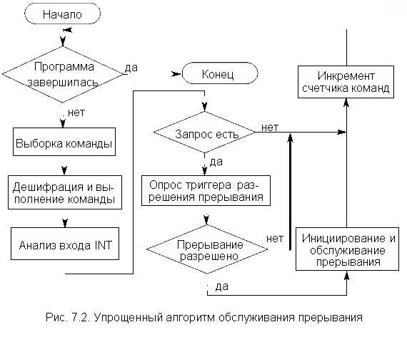
Следует отметить, что внутренний триггер разрешения прерываний INTE называется также маской прерывания. Состояние этого триггера идентифицирует сигнал с такой же мнемоникой. Если INTE = 0, то прерывания запрещены (замаскированы) и процессор не реагирует на сигнал INT = 1. Этот триггер управляется программно с помощью команд EI (разрешение прерывания) и DI (запрещение прерывания).
В МП - комплекте КР580 аппаратный полинг реализуется специальной БИС программируемого контроллера прерываний КР580BH59, обеспечивающей прием и обработку восьми сигналов прерывания. Возможно совместное использование восьми БИС, что увеличивает число сигналов до 64. С каждым входом сигнала прерывания ассоциируется адрес памяти, который выдается на шину данных в ответ на сигнал после выдачи кода операции CALL (вызов подпрограммы). Следует иметь в виду, что для формирования адреса вектора прерывания в BH59 используется трехбайтовая команда CALL. Все три байта команды CALL передаются по ШД последовательно в процессор в ответ на сигнал системного контроллера . Адреса, соответствующие всем входам запросов прерываний, расположены равномерно через 4 или 8 байт и обычно содержат команды переходов JMP к соответствующим подпрограммам. Интервалы 4 или 8 байт задаются командой инициализации контроллера. Для каждого контроллера 32- или 64-байтные области памяти могут находиться в любом месте ОП, начиная с четной границы. Старшие биты A15-A6 адреса загружаются в регистр контроллера командой инициализации, а младшие биты A4-A0 формируются в контроллере. Разряд A5 программирует интервал в 4 или 8 байт для каждого вектора прерывания.
Контроллер КР580BH59 является законченным устройством, позволяющим реализовывать достаточно сложные многоуровневые системы прерывания. При этом его программирование, т.е. формирование приказов инициализации и рабочих приказов, представляет определенные трудности.
Однако во многих случаях от контроллера прерываний не требуется такой многофункциональности. Простой контроллер прерываний можно построить на обычных логических схемах или с использованием специальной БИС приоритетных прерываний К589ИК14 и многорежимного буферного регистра К589ИР12. В этом случае для формирования адреса вектора прерывания используется 1-байтовая команда RST (ее исполнение уже рассматривалось). Адреса, соответствующие всем входам запросов прерываний, располагаются равномерно через 8 байт от 0000H до 0038H, т.е. под векторы прерываний зарезервированы первые 64 ячейки ОП.
ВВ В РЕЖИМЕ ПДП
В этом режиме обмен данными между ПУ и ОП микроЭВМ происходит без участия процессора. Обменом в режиме ПДП управляет не программа (или прерывающая подпрограмма), а электронные схемы, внешние по отношению к процессору.
При программном обмене или обмене в режиме прерывания для передачи одного слова данных (в частном случае – байта) затрачивается несколько (2-3) команд процессора, суммарное время выполнения которых может оказаться недопустимо большим для обмена с конкретным ПУ. Это может быть связано с тем, что период поступления данных определяется внешними по отношению к процессору факторами, например скоростью движения носителя информации или периодом выборки значений какой-либо функции в реальном масштабе времени, если ЭВМ занимается сбором и обработкой информации. Необходимость в скоростном обмене большими объемами информации возникает также при работе микроЭВМ с контроллерами видеосистем. Кроме того, в простейших микроЭВМ иногда возникает необходимость начальной загрузки программ в ОП из ПУ.
Для получения максимальной скорости обмена желательно, чтобы ПУ через контроллер ПДП имело непосредственную связь с ОП микроЭВМ, т.е. имело бы специальную магистраль. Однако такое решение существенно усложняет и удорожает микроЭВМ, особенно при подключении нескольких ПУ. В большинстве микроЭВМ для реализации обмена в режиме ПДП используются шины системной магистрали. Именно этот вариант и рассматривается ниже. При этом возникает проблема совместного использования шин системного интерфейса процессором и контроллером ПДП, которая имеет два основных способа решения – ПДП с захватом цикла и ПДП с блокировкой процессора.
ПДП с захватом цикла
Этот способ ПДП предназначен для обмена короткими блоками информации в виде байта или слова и имеет два варианта:
Вариант 1
В этом случае для обмена используются те интервалы времени машинного цикла процессора, в которых он не обменивается данными с памятью и ПУ. Таким образом, контроллер ПДП никак не мешает работе процессора. В МП КР580 такими интервалами являются такты T4 и Т5 машинного цикла (сразу следует отметить, что контроллер КР580ВТ57 не работает в таком режиме). Однако возникает необходимость выделения таких интервалов для исключения временного перекрытия обмена ПДП и процессора. В некоторых МП формируются специальные сигналы, указывающие такты, в которых процессор не ведет операций обмена. В других случаях применяют специальные схемы, идентифицирующие "свободные" интервалы времени.
Применение такого способа организации ПДП не снижает производительность МП, но передача данных происходит только в случайные моменты времени. Это понижает общую скорость обмена. Кроме того, для некоторых ПУ такой режим обмена вообще неприемлем.
Вариант 2
В этом случае на время, необходимое для обмена одним байтом или словом данных (что составляет несколько тактов), процессор принудительно отключается от шин системной магистрали. Такой способ организации ПДП с захватом цикла является наиболее распространенным.
Когда ПУ готово к обмену, оно формирует сигнал "требование ПДП", который поступает в контроллер ПДП. Он, в свою очередь, вырабатывает аналогичный управляющий сигнал, который заставляет процессор на несколько тактов отключиться от системной магистрали. В МП КР580 это сигнал HLD (HOLD). Получив этот сигнал, процессор приостанавливает выполнение очередной команды, не дождавшись ее завершения, выдает сигнал "подтверждение ПДП" (в МП КР580 это сигнал HLDA) и отключается от шин системной магистрали. МП КР580 освобождает системную магистраль после такта Т3 текущего машинного цикла, причем внутренние операции в процессоре (такты Т4 и Т5) продолжаются и могут быть совмещены по времени с операциями ПДП.
Таким образом, в отличие от режима прерывания, который вводится только после завершения текущей команды, режим ПДП вводится до ее завершения. Это связано с тем, что в режиме ПДП внутренние регистры процессора не используются, их содержимое не модифицируется, а, следовательно, и не требуется запоминания в стеке.
С этого момента времени (такт Т4) всеми шинами системной магистрали управляет контроллер ПДП. Используя системную магистраль, он осуществляет обмен между ПУ и микроЭВМ одним байтом или словом, а затем, сняв сигнал HLD, возвращает управление системной магистралью процессору. Как только ПУ будет готово к обмену, оно вновь захватывает магистраль и т.д. В промежутках между сигналами HLD процессор продолжает выполнять команды текущей программы.
Естественно, что применение такого способа организации ПДП замедляет выполнение программы, но в меньшей степени, чем при обмене в режиме прерывания, хотя бы потому, что не требуется операций со стеком. Кроме того, в отличие от варианта 1 обмен происходит в те моменты времени, в которые это требует ПУ, что особенно важно при работе микроЭВМ в режиме реального времени.
Следует отметить, что такой вариант ПДП используется только тогда, когда интервалы времени между моментами готовности ПУ к обмену достаточно велики и позволяют выполнить процессору несколько операций.
ПДП с блокировкой процессора
Этот режим отличается от ПДП с "захватом цикла" тем, что управление системным интерфейсом передается контроллеру ПДП не на время обмена одним байтом, а на время обмена блоком данных. В этом случае все вопросы, связанные с синхронизацией работы ПУ и ОП, также решаются контроллером ПДП (в режиме "захвата цикла" их фактически решал процессор). Такой режим ПДП особенно необходим в тех случаях, когда процессор не успевает выполнить хотя бы одну команду между очередными операциями обмена в режиме ПДП. В этом случае контроллер ПДП обязательно должен иметь средства для модификации адресов обмена и контроля объема переданного блока информации. Этот режим ПДП в современных ЭВМ является основным, поскольку современные ПУ, такие как жесткие и оптические диски, видеосистемы, принтеры, сканеры и т.д., всегда ведут обмен блоками информации существенного объема.
Следует отметить, что реальные контроллеры ПДП, как правило, могут работать в различных режимах организации ПДП, зачастую комбинированных, поэтому рассмотренные выше варианты организации ПДП являются весьма условными (особенно ПДП с блокировкой процессора и вариант 2 ПДП с захватом цикла).
Конкретные технические реализации каналов ПДП весьма разнообразны и определяются особенностями организации ЭВМ, используемого в ней процессора, обслуживаемого набора ПУ и т.д. Между тем можно сформулировать основные принципы работы большинства каналов ПДП и построить обобщенный алгоритм их функционирования. В частности, применение в ЭВМ обмена в режиме ПДП требует предварительной подготовки со стороны процессора:
- Для каждого ПУ необходимо выделить область памяти, используемой при обмене, и указать ее размер, т.е. количество записываемых в память или читаемых из памяти байтов (слов) информации. Следовательно, контроллер ПДП должен обязательно иметь в своем составе регистры адреса и счетчик байтов (слов).
- Перед началом обмена с ПУ в режиме ПДП процессор должен выполнять программу загрузки (инициализации). Эта программа обеспечивает запись в указанные регистры контроллера ПДП начального адреса выделенной области памяти (для данного ПУ) и ее размера в байтах или в словах в зависимости от того, какими единицами информации ведется обмен.
Вышеизложенное не относится к начальной загрузке программ в память микроЭВМ в режиме ПДП. В этом случае содержимое регистров адреса и счетчика байтов устанавливается перемычками или переключателями, т.е. принудительно заносится каким-либо способом.
Упрощенный алгоритм обмена блоком информации в режиме ПДП при наличии нескольких ПУ представлен на рис. 8.3, причем в скобках указано устройство, выполняющее операцию.
Структура представленного алгоритма достаточно проста и не требует дополнительных пояснений. Все операции, выполняемые устройствами в процессе передачи блока данных, рассматривались выше. Если в контроллер ПДП одновременно поступило два или более запросов, то после обслуживания наиболее приоритетного ПУ произойдет обслуживание остальных ПУ в порядке уменьшения приоритетов. Для этого контроллер ПДП опять выставит процессору сигнал HLD, и цикл обмена повторится для другого ПУ.
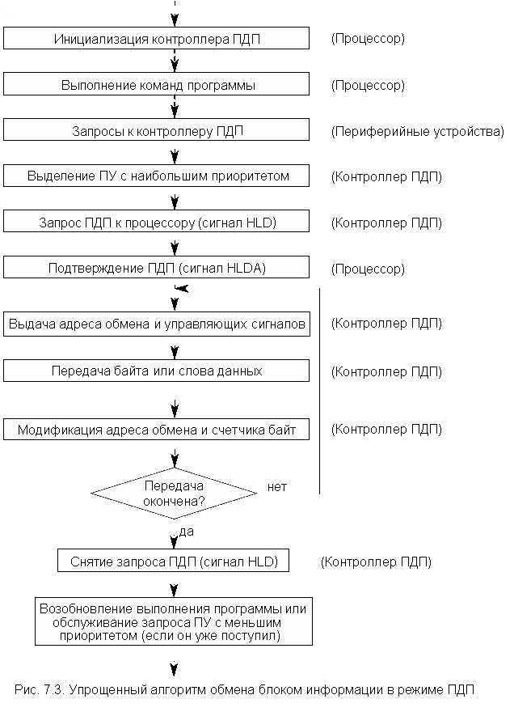
Следует отметить, что контроль за окончанием цикла обмена (объемом переданного блока информации) может осуществляться не только по количеству переданных байт или слов, но и по конечному адресу зоны памяти, отведенной для обмена с данным ПУ. Кроме того, в реальных системах время удержания магистрали контроллером ПДП при обслуживании одного ПУ всегда ограничено и контролируется, поэтому завершение цикла обмена может произойти также по сигналу специального таймера.
Как уже отмечалось, в МП комплект КР580 входит специализированная БИС программируемого контроллера ПДП КР580ВТ57. Этот контроллер может управлять работой четырех независимых каналов ПДП с учетом приоритетов ПУ. Для процессора контроллер представляется несколькими 8-битными регистрами с соответствующими номерами. После инициализации контроллер может управлять передачей блока данных до 16 Кбайт по каждому каналу без вмешательства процессора.
АДАПТЕР ПОСЛЕДОВАТЕЛЬНОГО ИНТЕРФЕЙСА
Передача данных в последовательном формате имеет ряд преимуществ, основным из которых является минимальное качество физических линий (проводников) промежуточного интерфейса. В простейшем случае (например, нуль-модемное соединение) требуются только две физические линии. Это обстоятельство обусловило очень широкое распространение таких интерфейсов в вычислительной технике.
Обмен по последовательным промежуточным интерфейсам обычно используется при работе микроЭВМ с удаленными или медленно действующими ПУ, с модемом, в распределенных системах сбора и обработки информации. Уже отмечалось, что одним из наиболее распространенных последовательных промежуточных интерфейсов являются интерфейс RS-232C и его модификации. (Речь идет об относительно низкоскоростных интерфейсах). Отмечалось также, что серийно выпускаются программируемые БИС адаптеров, поддерживающих интерфейс RS-232C. Не рассматривая протоколы обмена для конкретных интерфейсов, отметим только некоторые особенности передачи данных в последовательном формате.
Единицей обмена в последовательном формате является символ, представленный в одной из систем кодирования и содержащий 5-8 информационных бит. Биты представлены в линии связи импульсами тока. На практике применяют два режима последовательного обмена: асинхронный (или стартстопный) и синхронный.
Асинхронный режим
Каждый символ передается автономно, и передача может быть начата в любой момент времени. Стандартный формат посылки приведен на рис. 7.4.
Передача начинается со стартового бита, являющегося логическим нулем, т.е. с прекращением тока в линии связи (длина бита обозначается t). Затем, в зависимости от разрядности кода, передаются 5-8 бит собственно символа. Передача символа завершается необязательным битом четного или нечетного паритета и 1, 1.5 или 2 стоповыми битами. Таким образом, максимальная длина посылки Т может быть равна 11 битам. Скорость передачи измеряется либо числом символов в секунду (1/Т), либо числом битовых посылок в секунду (1/t).
Синхронный режим
Передача начинается с одного или двух символов синхронизации SYN1 и SYN2, после которых последовательно без всяких разделителей передаются 5-8–битовые коды символов с необязательными битами четного или нечетного паритета. Формат сигналов в линии связи имеет вид, приведенный на рис. 7.5.
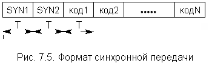
В обоих режимах необходимо контролировать передачу по битам паритета (если он предусмотрен в формате), выдерживать временные соотношения, а в асинхронном режиме дополнительно контролировать установленный формат символа.
Из сказанного следует, что асинхронному режиму свойственна избыточность. Так, минимальный код в 5 бит могут сопровождать 4 служебных бита, т.е. непроизводительное использование линии связи доходит до 44%, поэтому асинхронный режим используется в системах с небольшой скоростью передачи или с нерегулярным обменом.
Некоторые типы ППУ жестко настроены только на синхронный или асинхронный обмен. Но наибольшей гибкостью отличаются ППУ, которые называются УСАПП – универсальный синхронно-асинхронный приемопередатчик. Типичным примером такого УСАПП является БИС адаптера последовательного промежуточного интерфейса КР580ВВ51, структурная схема которой приведена на рис. 7.6.
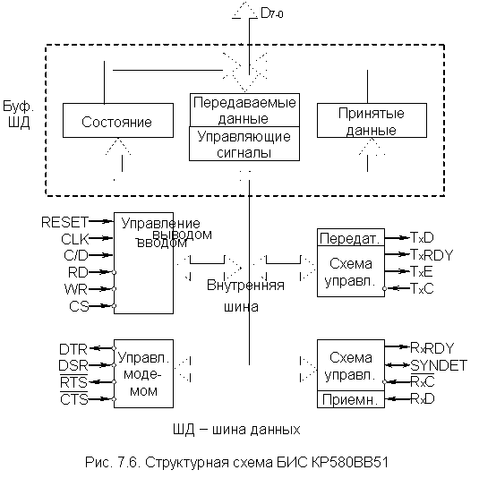
Этот адаптер производит автоматическое преобразование кода из параллельного в последовательный и наоборот, а для МП выглядит устройством параллельного ввода и вывода. Он может работать в полудуплексном и дуплексном режимах. Наличие в БИС двойных буферов приводит к тому, что для реакции МП на запрос прерывания от адаптера в распоряжении МП имеется временной интервал Т передачи одного символа. Данный адаптер также генерирует и принимает сигналы управления модемом. С точки зрения программиста адаптер (т.е. его программная модель) имеет вид, приведенный на рис. 7.7.
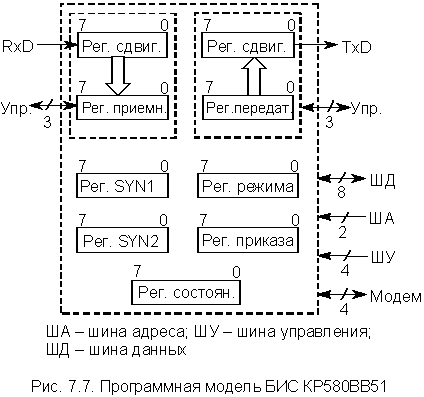
В общем случае схема подключения адаптера к системной магистрали выглядит так, как показано на рис. 7.8, хотя возможны и другие варианты./p>
Адаптер имеет двунаправленный буфер ШД, который служит для передачи собственно данных, управляющих слов и информации состояния. Его выходные каскады имеют три состояния и позволяют отключать адаптер от ШД. Как правило, обмен инициируется командами IN, OUT.
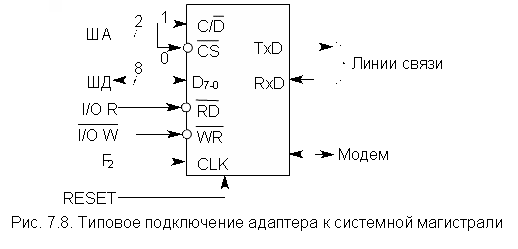
Схема управления воспринимает сигналы с ШУ и генерирует внутренние управляющие сигналы. В ее составе имеются регистр режима и регистр команды, которые хранят управляющие слова функционального определения адаптера.
Ниже рассматриваются только основные моменты функционирования данного адаптера. В частности, не рассматривается взаимодействие адаптера и модема (и соответствующие этому взаимодействию сигналы управления – сигналы блока управления модемом).
В адаптер подаются шесть входных управляющих сигналов:
- RESET (сброс) – H-активный сигнал сброса с минимальной длительностью 6 периодов синхронизации. После воздействия этого сигнала адаптер переходит в "холостой" режим и остается в нем до загрузки управляющих слов.
- CLK (синхронизация) – подключается ко второй фазе тактового генератора МП (F2). Частота сигнала CLK минимум в 30 раз выше частоты приема или передачи (имеются в виду частоты передачи или приема отдельных бит, а не их блоков).
 (считывание)
– L-активный сигнал, инициирует передачу данных или слова состояния из адаптера
на ШД.
(считывание)
– L-активный сигнал, инициирует передачу данных или слова состояния из адаптера
на ШД. (запись)
– L-активный сигнал загрузки в адресуемый регистр адаптера информации с ШД
(собственно данных или управляющих слов). Следует иметь в виду, что сочетание
сигналов
(запись)
– L-активный сигнал загрузки в адресуемый регистр адаптера информации с ШД
(собственно данных или управляющих слов). Следует иметь в виду, что сочетание
сигналов  и
и
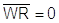
(т.е. активное состояние обоих сигналов) является запрещенным и приводит к непредсказуемым последствиям.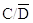
(управление/данные) – указывает тип вводимой в адаптер с ШД информации (H-уровень – управляющее слово, L-уровень – собственно данные). При выводе слова состояния адаптера на этот вход подается высокий уровень сигнала . (выбор
кристалла) – L-активный сигнал, разрешает связь между адаптером и ШД.
(выбор
кристалла) – L-активный сигнал, разрешает связь между адаптером и ШД.
Узел передатчика со схемой управления выполняет все функции, связанные с передачей последовательных данных, в частности:
- воспринимает параллельные коды символов от МП;
- автоматически вводит необходимые служебные биты и символы синхронизации;
- выдает последовательный поток данных на выход TxD.
К этому узлу относятся следующие внешние сигналы:
- TxD (выход передатчика) – подключается к линии связи или модему.
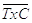
(синхронизация передатчика) – входной сигнал, управляющий скоростью передачи данных в последовательном коде. Спады "выдвигают" последовательно биты на выход TxD. В синхронном режиме скорость передачи соответствует частоте сигнала , а в асинхронном режиме программируется как 1, 1/16, 1/64 частоты сигнала .- TxE (пустой передатчик) – H-активный выходной сигнал, обозначающий отсутствие в адаптере символа для передачи (появляется, когда последний бит кода "выталкивается" из регистра сдвига, а в регистре передатчика также ничего нет). Его можно использовать для идентификации в полудуплексном режиме связи окончания передачи и коммутации линии на прием. В синхронном режиме H-уровень TxE указывает, что символ вовремя не загрузили в адаптер и в качестве "заполнения" автоматически передаются сигналы синхронизации.
- TxRDY (готовность передатчика) – H-активный выходной сигнал, определяющий готовность передатчика к загрузке нового символа с ШД (т.е. он индицирует, что регистр передатчика пуст и готов к загрузке). В это время предыдущий символ может еще находиться в регистре сдвига и постепенно "выдвигаться" в линию связи. Как только он будет полностью "выдвинут", новый символ будет перемещен в регистр сдвига (при наличии сигнала ) и сразу же начнет "выдвигаться" в линию связи (вплотную к предыдущему).
Сигнал TxE сбрасывается при загрузке символа в адаптер, т.е. в регистр передатчика. Если регистр сдвига пуст и присутствует сигнал – (разрешение передачи), новый символ сразу же перемещается из регистра передатчика в регистр сдвига и начинает "выдвигаться" в линию связи. Как только регистр передатчика освободился, он готов к загрузке нового символа.
Сигнал TxRDY может быть использован как запрос прерывания процессора. При загрузке в регистр передатчика нового символа сигнал TxRDY сбрасывается. Состояние этого выхода (TxRDY), так же как и TxE, может быть опрошено программным способом, посредством считывания слова состояния.
Узел приемника со схемой управления выполняет все функции, связанные с приемом последовательных данных, в частности:
- воспринимает последовательные данные с входа RxD;
- контролирует и исключает служебные биты и символы синхронизации;
- преобразует последовательные данные в параллельный формат и передает "собранный" символ в процессор.
К этому узлу относятся следующие внешние сигналы:
- (вход приемника) – подключается к линии связи или модему;
- (синхронизация приемника) – определяет скорость приема информации в последовательном коде. В синхронном режиме частота приема равна частоте сигнала . В асинхронном режиме частота приема задается программным способом и может быть 1, 1/16, 1/64 от частоты сигнала синхронизации. При одинаковой скорости передачи и приема входы и запараллеливают и подключают к одному генератору синхронизации. Данные вводятся в регистр сдвига приемника по переднему фронту .
- RxRDY (готовность приемника) – H-активный выходной сигнал, свидетельствующий о готовности приемника к выдаче принятого символа в параллельном коде на ШД (т.е. символ информации полностью "вошел" в регистр сдвига и был перемещен в регистр приемника). Сигнал RxRDY может быть использован как запрос прерывания процессора. После считывания символа из адаптера (из регистра приемника) сигнал RxRDY сбрасывается. Состояние выхода RxRDY может быть опрошено программным способом, посредством считывания слова состояния.
- SYNDET (обнаружение синхронизации) – H-активный сигнал синхронного режима, который можно запрограммировать как входной и как выходной. Если он запрограммирован как выходной, то при обнаружении символа SYN, на выходе SYNDET формируется высокий уровень в момент, соответствующий середине последнего бита (если есть SYN1 и SYN2, это относится к SYN2). При считывании слова состояния сигнал сбрасывается. Если он запрограммирован как входной, то подача на него высокого уровня фиксирует момент начала приема символа, т.е. инициализируется ввод слова в приемник в последовательном коде, начиная со следующего за SYNDET сигнала .
Сигналы, связанные с узлом управления модемом, в настоящем разделе не рассматриваются, поскольку требуют достаточно подробного изучения протокола обмена в стандарте RS-232C. Остановимся только на основных моментах процесса программирования (инициализации) адаптера.
Управляющие слова, определяющие функциональную конфигурацию адаптера, должны загружаться сразу после операции сброса. Управляющие слова имеют два формата – слово режима и слово приказа (или команда). Оба слова имеют длину 8 бит.
Слово режима задает общие рабочие характеристики адаптера и загружается первым, так как осуществляет коммутацию схем прибора. В закодированном виде слово режима несет информацию о числе стоп-бит (1, 1.5, 2 бита), виде паритета (четный, нечетный), длине слова данных (5, 6, 7, 8 бит) и скорости передачи (эти же биты определяют режим – синхронный или асинхронный). После слова режима загружаются один или два символа синхронизации, если был определен синхронный режим (SYN1 и SYN2). Если адаптер запрограммирован на синхронный режим с одним символом синхронизации, то SYN2 пропускается. Если определен асинхронный обмен, то пропускаются оба символа SYN. Последним в адаптер загружается слово приказа, определяющее конкретные действия, в соответствии со словом режима.
Загрузка всех управляющих слов производится обычно
командой OUT (хотя можно обращаться и как к ячейке памяти) при следующих
значениях управляющих сигналов: , 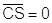 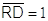 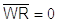
Слово приказа, как уже отмечалось, задает конкретные операции адаптера. Назначение отдельных разрядов слова приказа в данном разделе не рассматривается. Отметим только, что его разряды задают разрешение передачи или приема, сброс признаков ошибок, сигналы управления модемом, а также несут и некоторую другую информацию.
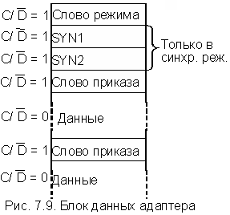
При организации последовательного интерфейса возникает необходимость в анализе состояния адаптера со стороны процессора. Состояние адаптера можно считать в любой момент времени посредством команды IN либо обратившись к регистру состояния как к ячейке памяти. При этом сигнал должен быть равным 1. Каждый бит слова состояния отражает состояние одного из сигналов. Часть этих сигналов уже была рассмотрена выше. Это TxRDY (D0), RxRDY (D1), TxE (D2) и SYNDET (D6). Кроме них слово состояния содержит еще 4 бита:
- D3 (PE) – ошибка паритета – устанавливается при обнаружении в принятом слове данных нарушения паритета;
- D4 (OE) – ошибка переполнения – устанавливается в любом режиме, если процессор вовремя не считал символ из регистра приемника (это слово данных теряется).
- D5 (FE) – ошибка кадра – устанавливается в асинхронном режиме, если в конце любого слова данных не обнаружен стоповый бит.
- D7 (DSR) – готовность модема.
Все флажки ошибок сбрасываются, если бит D4 команды установлен в 1. Следует особо подчеркнуть, что возникновение любого ошибочного условия не останавливает работу адаптера. Он только фиксирует ошибки, а реагировать на них должен сам процессор.
АДАПТЕР ПАРАЛЛЕЛЬНОГО ИНТЕРФЕЙСА
Передача данных в параллельном формате в общем случае является более высокоскоростной, чем передача в последовательном формате, поскольку все биты символа информации передаются параллельно по времени, т.е. одновременно. Однако это обстоятельство требует наличия достаточно большого числа физических цепей промежуточного интерфейса. Ввиду этого обмен по параллельным промежуточным интерфейсам обычно используется при работе микроЭВМ с близко расположенными высокоскоростными ПУ. Уже отмечалось, что одними из наиболее распространенных промежуточных интерфейсов являются интерфейс CENTRONICS и его модификации. Отмечалось также, что серийно выпускаются программируемые БИС адаптеров, поддерживающих интерфейс CENTRONICS и другие типы параллельных интерфейсов. Примером такого адаптера является БИС КР580ВВ55.
БИС КР580ВВ55 представляет собой программируемый адаптер параллельного интерфейса, позволяющий организовать обмен в параллельном коде практически с любым периферийным оборудованием. Структурная схема БИС адаптера приведена на рис. 7.10. Из структурной схемы БИС следует, что для подключения к линиям связи адаптер имеет три восьмибитовых порта A, B, C. Порты A и B не разделены, а порт C по существу представляет собой два четырехбитовых порта.
Программная модель адаптера приведена на рис. 7.11. Регистр состояния на рисунке изображен пунктиром, поскольку физически он отсутствует и его функции выполняет порт С
Прием и передача данных через порты осуществляются разными регистрами. Т.е. каждый порт содержит регистр-защелку, в которой фиксируются данные для передачи в линию связи, и регистр, отображающий состояние линии связи при приеме. Подключение того или другого регистра к линии связи определяется режимами работы данного порта и осуществляется соответствующими управляющими сигналами. (Подробнее этот вопрос будет рассмотрен ниже.) Отметим, что выводы портов и разряды регистров портов связаны через переключающие схемы, что особенно важно помнить при изучении функционирования порта C в различных режимах.
Для подключения к системной магистрали микроЭВМ используются 14 линий:
- D7-0 – двунаправленная шина данных с трехстабильным буфером.
- A1, A0 – линии адреса, которые выбирают внутренний регистр адаптера, подключаемый к ШД (00 – порт A, 01 – порт B, 10 – порт C и 11 – регистр управления).
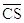
(выбор кристалла) – L-активный сигнал, разрешающий связь между адаптером и ШД.- (считывание) – L-активный сигнал, инициирующий считывание информации из адресуемого по линиям А1, А0 регистра адаптера на ШД.
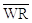
(запись) – L-активный сигнал загрузки в адресуемый регистр адаптера информации с ШД (собственно данные либо управляющее слово).- RESET (сброс) – H-активный сигнал сброса для приведения адаптера в начальное состояние. При действии сигнала сброса в регистр управления записывается слово (приказ), переводящее все три порта в режим 0 и состояние ввода.
Следует иметь в виду, что есть запретные комбинации
сигналов. Так, недопустимым является считывание информации из регистра
управления, т.е. комбинация 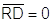 ).
).
Программирование и обмен данными с адаптером осуществляется обычно командами IN и OUT, при выполнении которых на линиях A7-0 (A15-8) выставляется код адреса. Обмен информацией с адаптером в этом случае можно вести только через аккумулятор. Входы A1, А0 адаптера обычно подключаются к младшим линиям ША, а подключение входа CS зависит от принятого способа выбора адаптера, если адаптеров несколько. В частности, если адаптеров меньше или равно шести, вход без дополнительного дешифратора подключается к соответствующей линии ША (A7-2). В этом случае кодами адресов будут комбинации 011111xx, 101111xx,..., 111110xx. Если адаптеров больше шести, то требуется дешифратор с L-активными выходами.
Адаптер может функционировать в трех основных режимах:
- Режим 0 – простой ВВ. В режиме 0 обеспечивается возможность синхронного и асинхронного программно-управляемого обмена данными через два независимых восьмиразрядных порта A и B и два четырехразрядных порта C.
- Режим 1 – стробируемый ВВ. В режиме 1 обеспечивается возможность обмена данными с ПУ через два независимых восьмиразрядных порта A и B по сигналам квитирования. При этом линии порта C используют для приема и выдачи сигналов управления обменом.
- Режим 2 – двунаправленный канал. В режиме 2 обеспечивается возможность обмена данными через восьмиразрядный двунаправленный порт A по сигналам квитирования. Для приема и передачи сигналов управления обменом используют пять линий порта C.
Более подробно эти режимы будут рассмотрены ниже.
Режим работы каждого из портов A, B и C определяется содержимым регистра управления, в который загружается управляющее слово (или приказ). Формат управляющего слова определения режима приведен на рис. 7.12. Из рисунка следует, что управляющее слово определения режима идентифицируется состоянием D7 = 1. Кроме того, режим работы половины порта C (PC7-4) определяется режимом работы порта A (группа A), а режим работы другой половины (PC3-0) определяется режимом работы порта B (группа B).
При подаче сигнала RESET регистр управления устанавливается в состояние, при котором все каналы настраиваются на работу в режиме 0 для ввода информации. Режим работы портов можно изменить как в начале, так и в процессе выполнения программы, что позволяет обслужить различные ПУ одной БИС в определенном порядке. При изменении режима работы любого порта все входные и выходные регистры портов и триггеры состояния сбрасываются.
В дополнение к основному режиму работы обеспечивается возможность программно-независимой установки 1 или 0 в любой из разрядов порта C. Управляющее слово установки и сброса разрядов порта С идентифицируется состоянием D7 = 0 и имеет формат, приведенный на рис. 8.13. Приказы данного формата используются, как правило, в режимах 1 и 2. Если микросхема запрограммирована для работы в режимах 1 или 2, то через выводы C0 и C3 порта C выдаются сигналы, которые могут использоваться как сигналы запросов прерывания для МП. Запретить или разрешить формирование этих сигналов в адаптере можно установкой или сбросом соответствующего разряда в регистре порта C. Это позволяет программисту запрещать или разрешать обслуживание любого ПУ без анализа запросов в контроллере прерываний.
Теперь рассмотрим более подробно основные особенности функционирования адаптера в различных режимах. При этом следует помнить, что выводы портов и разряды регистров портов связаны через переключающие схемы (это уже отмечалось). Кроме того, адаптер содержит схемы "И", позволяющие выполнять простейшие логические операции над содержимым определенных разрядов регистра порта C и сигналами на соответствующих выводах порта. Результаты этих операций появляются в виде соответствующих сигналов (H или L) на выводах C0 или C3. Порты A и B служат только для обмена данными и не содержат никаких логических элементов, при этом операции установки и сброса отдельных бит портов A и B можно реализовать только через аккумулятор с помощью операндов-масок, т.е. в три этапа.
Режим 0
Применяется в программно управляемом ВВ с медленно действующими ПУ (например, посимвольный принтер или программатор). В этом случае не требуется сигналов управления обменом информации с ПУ, а необходимы только известительные сигналы, сообщающие о готовности ПУ к вводу и выводу информации. При работе в режиме 0 обеспечивается простой ввод и вывод информации через любой из трех портов. Как уже отмечалось, в этом режиме микросхема представляет собой совокупность двух восьми- и двух четырехразрядных каналов ВВ. В режиме 0 возможны 16 различных комбинаций схем ВВ портов A, B и C, которые определяются содержанием разрядов управляющего слова.
Выводимые данные фиксируются в регистрах-защелках, входящих в состав всех портов, а вводимые данные не запоминаются, т.е. при операции считывания входного порта в аккумулятор передается текущее состояние цепей линии связи. Это справедливо только для режима 0.
В качестве примера рассмотрим использование адаптера в режиме 0 для организации интерфейса с посимвольным принтером и программатором, имеющим канал записи и канал считывания. Пусть два устройства вывода (принтер и канал записи программатора) разделяют общую шину данных порта А. Считаем, что состояние готовности всех устройств представляет H-активный сигнал READY, а собственно передача данных сопровождается L-активными сигналами . Схема такого интерфейса приведена на рис. 7.14.
Из рисунка видно, что группа A (A7-0, C6-4) работает на вывод, а группа B (B7-0, C2-0) – на ввод. Данную конфигурацию определяет приказ вида 10000011 (или 83H).
Для организации ВВ необходима подпрограмма инициализации адаптера и три аналогичных подпрограммы ВВ для каждого ПУ. Каждая из них выполняет следующие действия: ввод слова состояния (порт С), проверку готовности, ввод или вывод данных и формирование сопровождающего строба. Если ПУ не готово к обмену, МП входит в цикл ожидания. В данном случае фактически реализован режим 1 программным способом, однако в общем случае для обмена в режиме 0 не требуется никаких сопровождающих сигналов. Например, при выводе информации на индикаторы.
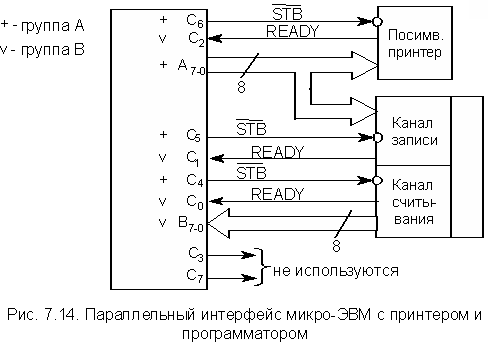
Режим 1
Это режим стробированного ВВ, предназначенный для однонаправленного обмена данными, инициируемого прерываниями. Собственно передача данных осуществляется через порты A и B, а шесть линий порта C используются для управления обменом. Каждая из этих линий в режиме 1 имеет строгое функциональное назначение, которое не может быть изменено пользователем. В то же время две оставшиеся линии порта C по усмотрению программиста могут работать либо на прием, либо на передачу.
Таким образом, в режиме 1 пользователю предоставляются следующие возможности:
- Запрограммировать один или два параллельных порта с линиями квитирования и прерывания, каждый из которых может работать на ввод или вывод.
- При использовании только одного порта остальные 13 линий адаптера запрограммировать в режим 0.
- При определении двух портов в режим 1 оставшиеся две линии использовать для ввода или вывода.
В качестве иллюстрации рассмотрим форматы управляющих слов и функциональные схемы каналов A при вводе данных в режиме 1 и В при выводе данных в режиме 1.
Канал A(режим 1, ввод данных). Формат управляющего слова приведен на рис. 7.15, причем знак X обозначает, что значение бита в слове безразлично.
В соответствии с таким управляющим словом функциональная схема канала A имеет вид, приведенный на рис. 7.16.
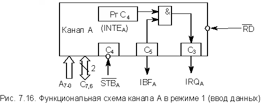
Канал B (режим 1, вывод данных). Формат управляющего слова приведен на рис. 7.17.
В соответствии с таким управляющим словом функциональная схема канала B имеет вид, приведенный на рис. 7.18.
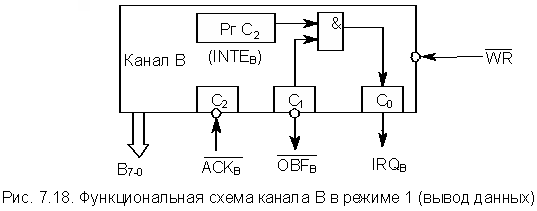
Функциональные схемы, приведенные на рис. 8.16 и 8.18, требуют некоторых пояснений, а именно:
- РгC2, РгC4 – триггеры 2-го и 4-го разрядов регистра порта C;
- C5-0 – выходы порта C.
- (строб приема) – входной сигнал, низкий уровень которого инициирует запись данных с линии связи во входной регистр-защелку соответствующего канала.
- IBF (входной буфер загружен) – выходной сигнал, высокий уровень которого свидетельствует о том, что входные данные записаны во входной регистр-защелку соответствующего канала. Устанавливается спадом и сбрасывается фронтом .
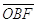
(выходной буфер загружен) – выходной сигнал, низкий уровень которого свидетельствует о наличии данных в порту вывода (данные выставлены на линии интерфейса). Устанавливается фронтом и сбрасывается низким уровнем сигнала .- (подтверждение) – входной сигнал, низкий уровень которого подтверждает считывание выставленных данных с линий интерфейса. Поскольку адаптер предназначен для организации параллельного интерфейса, выходные сигналы управления обменом, генерируемые передатчиком, полностью соответствуют входным сигналам приемника и наоборот, т.е. соответствует , а IBF – .
- (разрешение прерывания) – сигналы разрешения запросов прерывания по каналам А () и В () устанавливаются и сбрасываются только программным путем, для чего используются управляющие слова с . Сигналом можно управлять с помощью установки и сброса бита регистра порта С РгС4, а сигналом – бита РгС2. При этом следует помнить, что сигналы на входах С2 и С4 никак не воздействуют на разряды РгС2 и РгС4 регистра порта С.
- IRQ (запрос прерывания) – выходной сигнал, который можно использовать как запрос прерывания МП.
Остановимся на сигналах несколько подробнее.
Для состояния ввода (порт А) сигнал устанавливается в состояние 1, если , , . сбрасывается спадом сигнала , когда МП считывает из адаптера поступившие данные. Для состояния вывода (порт В) сигнал устанавливается в состояние 1, если , , . сбрасывается спадом сигнала , когда МП записывает в адаптер новые данные.
При необходимости использования обоих каналов (А и В) в рассмотренных состояниях управляющие слова, приведенные на рис. 7.15 и рис. 7.17, объединяются в одно общее управляющее слово. Аналогичным образом каналы А и В в режиме 1 могут быть запрограммированы и на другие комбинации операций ВВ. Форматы управляющих слов и функциональные схемы каналов для этих комбинаций операций ВВ в настоящем разделе не рассматриваются. Отметим только, что передача сигналов управления обменом осуществляется всегда по шести линиям порта С, но свободными могут оставаться не линии С7, С6, как было в рассмотренном случае, а линии С5, С4.
Режим 2
Это режим двунаправленного обмена, обеспечивающий ввод и вывод данных через один порт. В этом режиме может работать только группа A. Порт A используется для передачи собственно 8-битных данных, а для обеспечения протокола обмена используются пять линий порта C. Функции сигналов управления, используемых для передачи информации в режиме 2, и временные соотношения между ними такие же, как и в режиме 1.
Формат управляющего слова в режиме 2 изображен на рис. 7.19. В соответствии с таким управляющим словом функциональная схема канала A имеет вид, приведенный на рис. 7.20. Следует отметить, что биты D2-D0 управляющего слова задают режим работы группы В. Если для группы А определен режим 2, то для группы В может быть определен режим 1 или режим 0.
Вводимые и выводимые данные фиксируются в регистрах-защелках порта А. Общая дисциплина квитирования, как уже отмечалось, аналогична режиму 1. Однако имеются отдельные сигналы (триггеры) разрешения запросов прерывания для состояния вывода и ввода порта А:
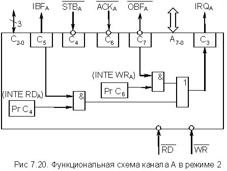
INTE WRA – сигнал разрешения запросов прерывания IRQA по каналу А для состояния вывода. Управляется установкой и сбросом бита регистра порта С РгС6.
INTE RDA – сигнал разрешения запросов прерывания IRQA по каналу А для состояния ввода. Управляется установкой и сбросом бита регистра порта С РгС4.
Назначение линий С2-0 порта С зависит от запрограммированного режима группы В (биты D2-D0 управляющего слова).
Если адаптер запрограммирован для работы в режиме 1 или 2, то состояние каждого сигнала управления об установлении связи с ПУ, принимаемого и выдаваемого через выводы порта C, фиксируется в регистре порта C. Это позволяет программисту проверять состояние каждого ПУ простым чтением содержимого регистра порта C и соответствующим образом изменять программу. Форматы слова состояния в настоящем разделе не рассматриваются.